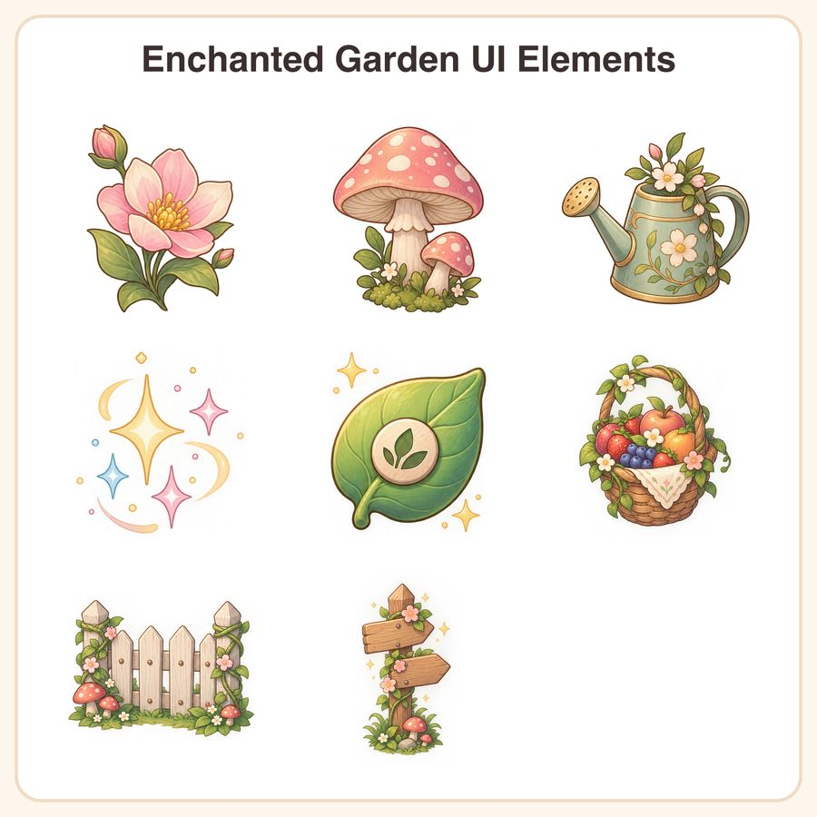

$7.99
Buy nowGet it on itch.ioView on EtsyBring your magical garden game to life with this charming Enchanted Garden UI Elements pack. Perfect for indie developers crafting cozy fantasy or farming games, these assets combine soft pastels and delicate hand-drawn line art, featuring florals, mushrooms, leaves, and sparkling accents. What's Included: • 1 Flower icon (PNG & 1024px + 1024px + 1024px + 512px PNGs) • 1 Mushroom sprite (PNG & 1024px + 1024px + 1024px + 512px PNGs) • 1 Watering can (PNG & 1024px + 1024px + 1024px + 512px PNGs) • 1 Set of magic sparkles (PNG & 1024px + 1024px + 1024px + 512px PNGs) • 1 Leaf button (PNG & 1024px + 1024px + 1024px + 512px PNGs) • 1 Fruit basket (PNG & 1024px + 1024px + 1024px + 512px PNGs) • 1 Garden fence segment (PNG & 1024px + 1024px + 1024px + 512px PNGs) • 1 Wooden signpost (PNG & 1024px + 1024px + 1024px + 512px PNGs) File Formats & Sizes: • 1024px transparent PNGs for crisp display at any size • 512px transparent PNGs for immediate use How to Use: Import these assets into your game engine or design software to create enchanting user interfaces, overlays, icons, and decorative elements that match your fantasy farming or garden simulation game's theme. License: This pack is licensed for personal use and small-business commercial use (up to 500 units sold). You may not resell or redistribute the original files. Disclosure: These delightful designs were created by our shop with thoughtful assistance from AI tools to ensure quality and uniqueness for your game development needs.